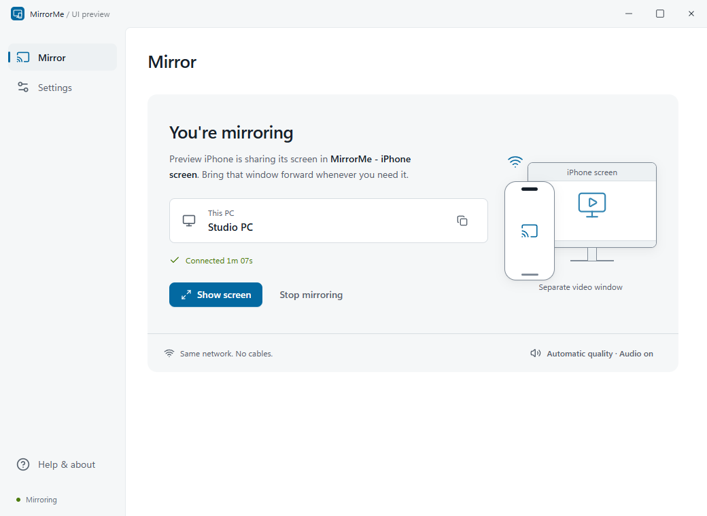
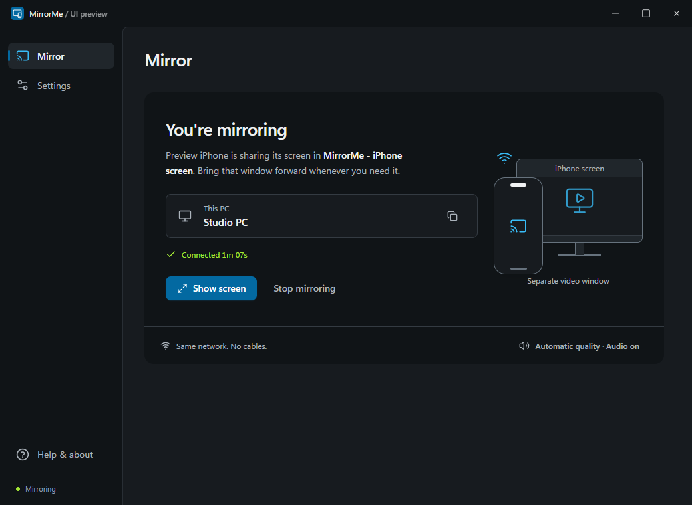

Mirror your iPhone
to Windows.
Screen and audio over AirPlay.
17.9 MB executable. Built-in receiver.
Download for Windows
Windows x64 · Unsigned preview
Source, licenses & checksums
The app
Static screenshots · Example imageMirrorMe


iPhone screen · Separate window
- 1
Open MirrorMe
Extract the ZIP, then run
MirrorMe.exe. - 2
Name this PC
Allow private-network access if Windows prompts.
- 3
Connect your iPhone
Control Center → Screen Mirroring → your PC.